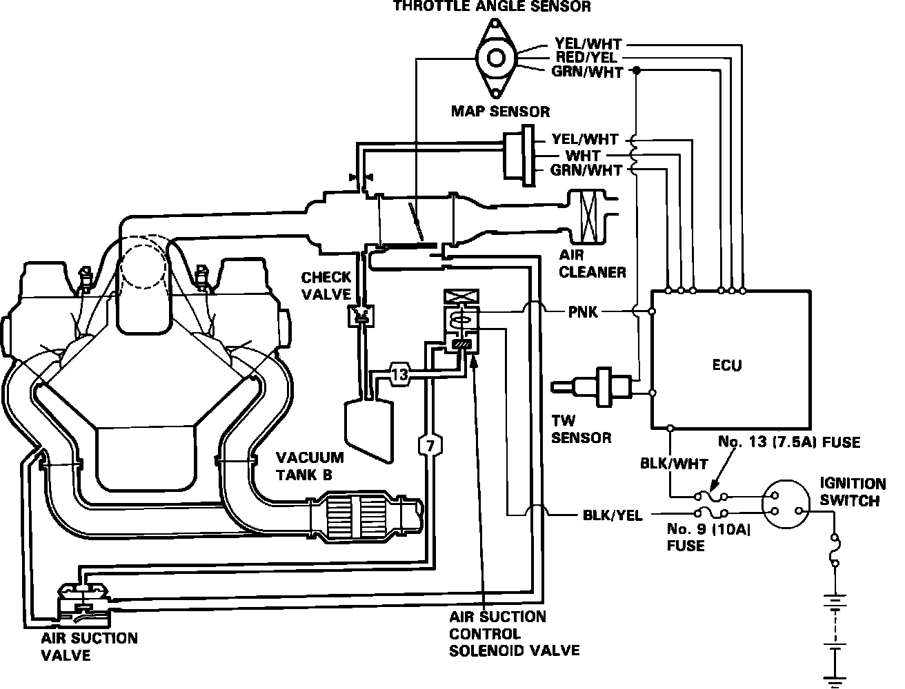

Air Injection: Description and Operation
Fig. 45a Air Injection System:

PURPOSE
This system is designed to improve emissions performance by supplying fresh air from the air cleaner into the exhaust manifold through the air suction valve.
OPERATION
When the air suction solenoid valve is activated, manifold vacuum raises the diaphragm of the air suction valve. Fresh air from the air cleaner is directed to the exhaust manifold by pulsations of exhaust gases.
OPERATING CONDITIONS
Fresh air is introduced to the exhaust stream by the pulsations of the exhaust. At low engine speeds, the exhaust stream is a series of high and low pressure pulses. The reed valve in the air suction valve blocks the high pressure pulses and lets fresh air in to fill the low pressure pulses. The air suction control solenoid valve activation is delayed after starting for approximately 10 to 60 seconds depending upon coolant temperature.